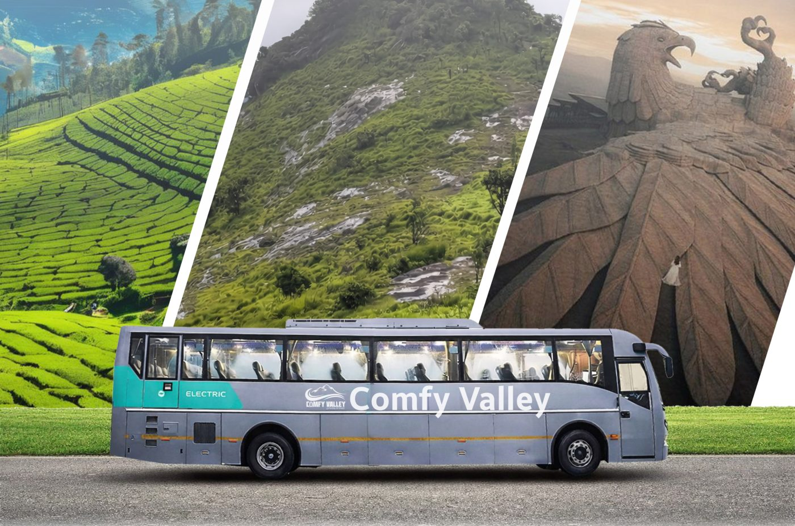
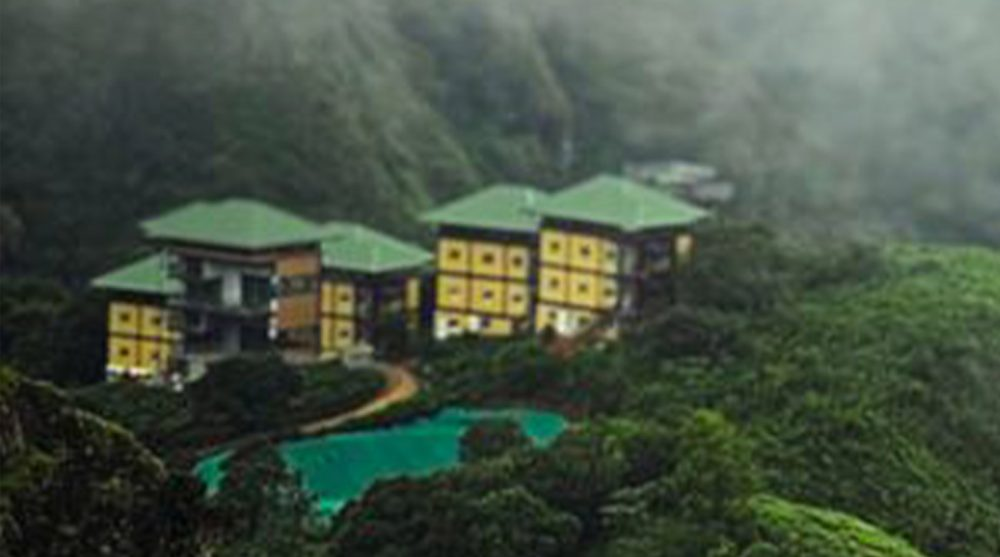

Comfy Farm Valley
Kasaragod
Fifteen acres of soulful farmland where life moves with the sun, soil, and seasons.
See Kerala Soul Project
Travel the state. Live every landscape. Experience Kerala The Comfy Way.
Contact Us
Kerala is not a destination — it is a journey of contrasts. Where hills breathe cool whispers, backwaters sing silent songs, where spices scent the air, waves kiss the sands, and every mile tells a new cultural story.
Comfy Valley invites you to experience Kerala in its complete rhythm: its landscapes, flavours, traditions, climates, and living heritage, through a curated network of immersive staycations and experience spaces spread across the entire state.
The See Kerala Soul Project by Comfy Valley celebrates Kerala's landscapes, climates, cuisines, and cultures through immersive experience spaces across the state.

From Kasaragod in the north to Poovar in the south.
Kasaragod
Fifteen acres of soulful farmland where life moves with the sun, soil, and seasons.
Banasura, Wayanad
A serene forest retreat overlooking reservoir waters and mist-covered hills.
Fort Kochi
Colonial charm, heritage streets, and timeless coastal ambiance.
Vembanad Lake
Authentic kettuvallam cruises through Kerala's living backwater culture.
Wagamon AVT
Unbroken tea-garden views floating above valley clouds.
Poovar
Minimalistic private retreats with pools and quiet luxury.
Twenty destinations. Endless emotions. One journey called Kerala.